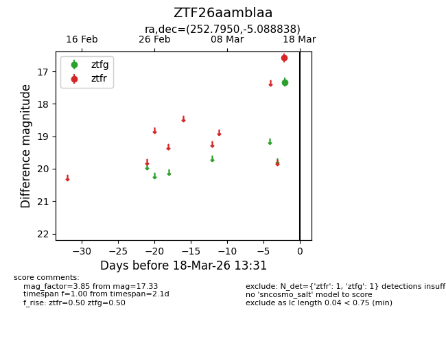
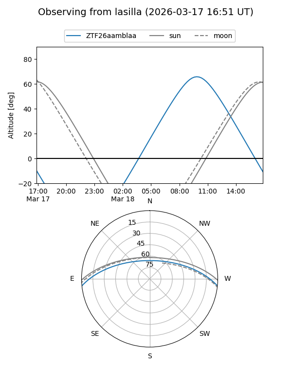
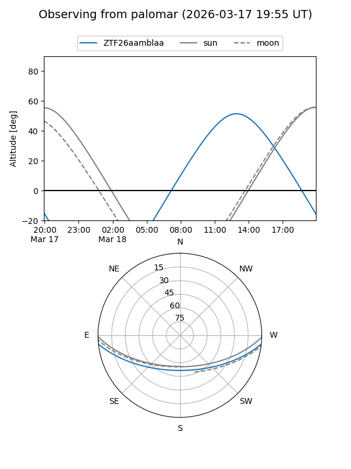

ZTF26aamblaa
Target ZTF26aamblaa at 2026-03-18 13:33
Aliases and brokers:
FINK: link
Lasair: link
ALeRCE: link
alt names
ZTF26aamblaa (ztf,fink_ztf)
Coordinates:
equatorial (ra, dec) = 252.7950,-5.08884
equatorial (HMS+DMS) = 16:51:10.79,-05:05:19.82
galactic (l, b) = (13.3605,+23.80708)
Flags:
Photometry:
last ztfg=17.33, ztfr=16.58
1 ztfg, 1 ztfr detections
Lightcurve

Visibility


Additional plots